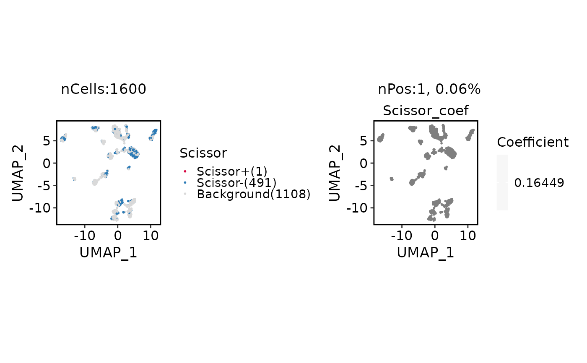

Run Scissor phenotype-associated cell selection
Usage
RunScissor(
object,
bulk_dataset,
phenotype = NULL,
condition.by = NULL,
positive = NULL,
assay = NULL,
bulk_assay = "counts",
layer = "counts",
features = NULL,
family = c("gaussian", "binomial", "cox"),
backend = c("cpp", "r"),
alpha = NULL,
cutoff = 0.2,
tag = NULL,
graph = NULL,
dims = 1:10,
nfeatures = 2000,
seed = 123,
prefix = "Scissor",
tool_name = "Scissor",
store_inputs = FALSE,
verbose = TRUE,
srt = NULL
)Arguments
- object
A
Seuratobject containing single-cell expression data.- bulk_dataset
A bulk expression matrix-like object or a
SummarizedExperiment. Rows are genes and columns are bulk samples.- phenotype
Phenotype annotation for bulk samples. For
family = "binomial", character or factor values are converted to 0/1 according topositive. IfNULLandbulk_datasetis aSummarizedExperiment,condition.byis used.- condition.by
Column in
colData(bulk_dataset)used as phenotype whenphenotype = NULL.- positive
Positive phenotype level for binomial Scissor. If
NULL, the second sorted level is used.- assay
Assay to use.
NULLuses the default assay.- bulk_assay
Assay name used when
bulk_datasetis aSummarizedExperiment.- layer
Assay layer used from
object.- features
Optional genes used before intersecting bulk and single-cell features.
- family
Regression family passed to Scissor.
- backend
Scissor backend.
"r"calls the upstream package path and"cpp"uses the optimizedscoppath. Legacy aliases"original"and"scop"are accepted as"r"and"cpp", respectively.- alpha
Scissor alpha search values. If
NULL, Scissor's default grid is used.- cutoff
Maximum selected-cell fraction used by Scissor's alpha search.
- tag
Optional phenotype labels for printed/stored summaries.
- graph
Existing Seurat graph used by the
"cpp"backend. IfNULL, an assay SNN graph orRunStandardWorkflow()graph is reused when present, otherwise a temporary Scissor-like graph is built.- dims
PCA dimensions used when a temporary graph is built.
- nfeatures
Number of variable features used when a temporary graph is built.
- seed
Random seed used by Scissor's alpha loop.
- prefix
Prefix for metadata column names.
- tool_name
Name of the
srt@toolsentry.- store_inputs
Whether to store Scissor regression inputs in
object@tools. Default isFALSEto avoid large objects.- verbose
Whether to print the message. Default is
TRUE.- srt
Deprecated alias for
object; supply exactly one of the two. It will be removed in scop 1.0.0.
Value
A Seurat object with Scissor status and coefficient columns in
metadata and a Scissor result bundle in srt@tools[[tool_name]].
References
Sun D, Guan X, Moran AE, et al. (2022). Identifying phenotype-associated subpopulations by integrating bulk and single-cell sequencing data. Nature Biotechnology, 40(4), 527-538. doi:10.1038/s41587-021-01091-3
Examples
Restored example output generated on 2026-10-13 from SCOP 53ed7e08f. These historical examples have not been revalidated against the current release. Current usage and arguments are documented above.
data(panc8_sub)
data(islet_bulk)
panc8_sub <- RunStandardWorkflow(panc8_sub, verbose = FALSE)
#> ℹ [2026-10-13 17:16:28] Skip `log1p()` because `layer = data` is not "counts"
panc8_sub <- RunScissor(
panc8_sub,
bulk_dataset = islet_bulk,
condition.by = "condition",
positive = "bfa",
family = "binomial",
features = head(
intersect(
rownames(panc8_sub),
rownames(SummarizedExperiment::assay(islet_bulk, "counts"))
), 1000
),
alpha = 0.2,
cutoff = 0.5
)
#> ℹ [2026-10-13 17:17:58] Scissor alpha 0.2 selected 1 positive and 491 negative cells (30.75%)
#> ✔ [2026-10-13 17:17:58] Scissor stored 1 Scissor+ and 491 Scissor- cells
ScissorPlot(
panc8_sub,
xlab = "UMAP_1",
ylab = "UMAP_2"
)
